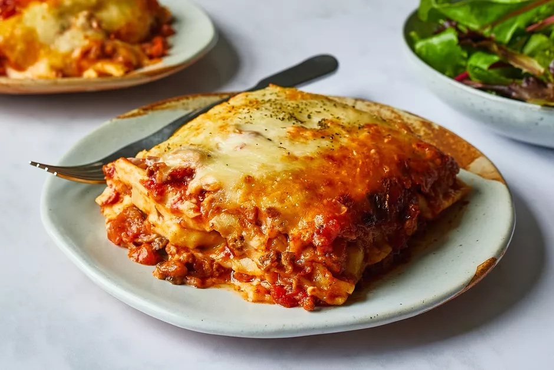

<< Home
Lasagna

Description
A traditional lasagna that will remind you of Italy.
Ingredients
- 1 pound ground beef
- 1 pound bulk Italian sausage
- 1/2 cup warm water
- 1 cup sliced black olives
- 1 pinch basil
- 2 teaspoons garlic powder
- 1 tablespoon dried onion flakes
- 2 jars marinara sauce
- 1 package lasagna noodles
- 8 ounces ricotta cheese
- 1 pound mozzarella cheese, shredded
Steps
- Brown the ground beef and Italian sausage in large skillet over medium heat. Drain excess grease.
- Stir in water and black olives. Season with basil, garlic powder, oregano, sage, pepper, minced garlic, and onion flakes.
- Simmer for about 15 minutes, stirring frequently.
- Stir in marinara sauce, and remove from heat
- Preheat oven to 375 degrees.
- Place layer of meat and sauce in bottom of 9x13 baking dish. Cover with layer of lasagna noodles. Spread ricotta cheese and sprinkle mozzarella cheese over. Repeat 3 times.
- Top off with meat and sauce
- Bake for 45 minutes
- Remove when knife cuts easily
- Remove from oven and sprinkle rest of mozzarella cheese on top
- Return to oven for 10 minutes for cheese to melt